Решение задачи обычно свóдится к тому, чтобы путем логических рассуждений и вычислений найти значение какой-нибудь величины. Например, найти скорость, время, расстояние, массу какого-нибудь предмета или количество чего-то.
Такую задачу можно решить с помощью уравнения. Для этого искомое значение обозначают через переменную, затем путем логических рассуждений составляют и решают уравнение. Решив уравнение, производят проверку на то, удовлетворяет ли решение уравнения условиям задачи.
Содержание урокаЗапись выражений, содержащих неизвестное
Решение задачи сопровождается составлением уравнения к этой задаче. На начальном этапе изучения задач желательно научиться составлять буквенные выражения, описывающие ту или иную жизненную ситуацию. Этот этап не является сложным и его можно изучать в процессе решения самой задачи.
Рассмотрим несколько ситуаций, которые можно записать с помощью математического выражения.
Задача 1. Возраст отца x лет. Мама на два года младше. Сын младше отца в 3 раза. Запишите возраст каждого с помощью выражений.
Решение:
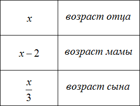
Задача 2. Возраст отца x лет, мама на 2 года младше отца. Сын младше отца в 3 раза, дочь младше матери в 3 раза. Запишите возраст каждого с помощью выражений.
Решение:
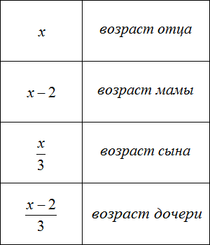
Задача 3. Возраст отца x лет, мама на 3 года младше отца. Сын младше отца в 3 раза, дочь младше матери в 3 раза. Сколько лет каждому, если общий возраст отца, мамы, сына и дочери составляет 92 года?
Решение:
В данной задаче помимо записи выражений, необходимо вычислить возраст каждого члена семьи.
Сначала запишем возраст каждого члена семьи с помощью выражений. За переменную x примем возраст отца, и далее пользуясь этой переменной составим остальные выражения:
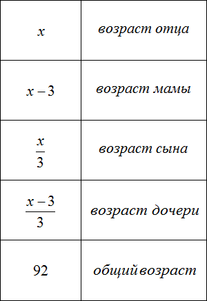
Теперь определим возраст каждого члена семьи. Для этого нам нужно составить и решить уравнение. Все компоненты уравнения у нас уже готовы. Осталось только собрать их воедино.
Общий возраст в 92 года получился путем сложения возрастов папы, мамы, сына и дочери:
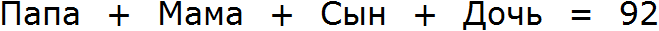
Для каждого возраста мы составили математическое выражение. Эти выражения и будут компонентами нашего уравнения. Давайте соберем наше уравнение согласно данной схеме и таблице, которая была приведена выше. То есть слова папа, мама, сын, дочь заменим на соответствующее им в таблице выражение:
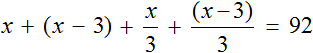
Выражение, отвечающее за возраст мамы x − 3, для наглядности было взято в скобки.
Теперь решим получившееся уравнение. Для начала можно раскрыть скобки там, где это можно:
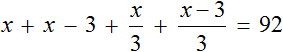
Чтобы освободить уравнение от дробей, умножим обе части на 3
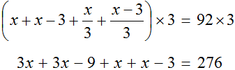
Решим получившееся уравнение, пользуясь известными тождественными преобразованиями:
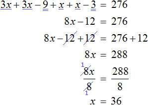
Мы нашли значение переменной x. Эта переменная отвечала за возраст отца. Значит возраст отца составляет 36 лет.
Зная возраст отца, можно вычислить возрасты остальных членов семьи. Для этого нужно подставить значение переменной x в те выражения, которые отвечают за возраст конкретного члена семьи.
В задаче было сказано, что мама на 3 года младше отца. Ее возраст мы обозначили через выражение x−3. Значение переменной x теперь известно, и чтобы вычислить возраст мамы, нужно в выражении x − 3 вместо x подставить найденное значение 36
x − 3 = 36 − 3 = 33 года маме.
Аналогично определяется возраст остальных членов семьи:
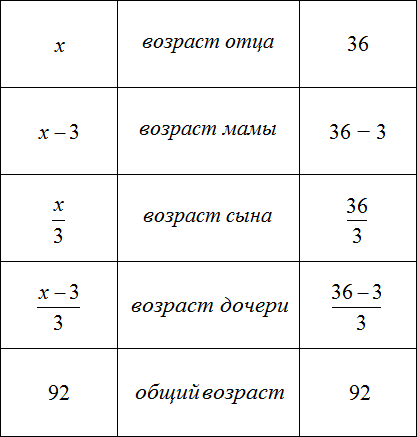
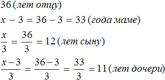
Проверка:
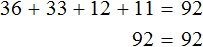
Задача 4. Килограмм яблок стоит x рублей. Запишите выражение, вычисляющее сколько килограмм яблок можно купить на 300 рублей.
Решение
Если килограмм яблок стоит x рублей, то на 300 рублей можно купить
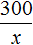
килограмм яблок.Пример. Килограмм яблок стоит 50 рублей. Тогда на 300 рублей можно купить
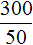
, то есть 6 килограмм яблок.Задача 5. На x рублей было куплено 5 кг яблок. Запишите выражение, вычисляющее сколько рублей стоит один килограмм яблок.
Решение
Если за 5 кг яблок было уплачено x рублей, то один килограмм будет стоит
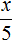
рублейПример. За 300 рублей было куплено 5 кг яблок. Тогда один килограмм яблок будет стоит
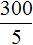
, то есть 60 рублей.Задача 6. Том, Джон и Лео на перемене пошли в столовую и купили по бутерброду и по кружке кофе. Бутерброд стоит x рублей, а кружка кофе — 15 рублей. Определите стоимость бутерброда, если известно, что за всё было уплачено 120 рублей?
Решение
Конечно, данная задача проста как три копейки и ее можно решить не прибегая к уравнению. Для этого из 120 рублей нужно вычесть стоимость трех кружек кофе (15 × 3), и полученный результат разделить на 3
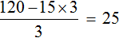
Но наша цель — составить уравнение к задаче и решить это уравнение. Итак, стоимость бутерброда x рублей. Куплено их всего три. Значит увеличив стоимость в три раза, мы получим выражение описывающее сколько рублей было уплачено за три бутерброда
3x — стоимость трех бутербродов
А стоимость трех кружек кофе можно записать как 15 × 3. 15 это стоимость одной кружки кофе, а 3 множитель (Том, Джон и Лео), увеличивающий эту стоимость в три раза.
По условию задачи за все уплачено 120 рублей. У нас уже появляется примерная схема, что нужно делать:
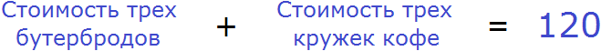
Выражения, описывающие стоимость трех бутербродов и трех кружек кофе, у нас уже готовы. Это выражения 3x и 15 × 3. Пользуясь схемой составим уравнение и решим его:
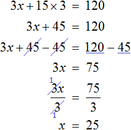
Итак, стоимость одного бутерброда составляет 25 рублей.
Задача решается верно только в том случае, если уравнение к ней составлено правильно. В отличие от обычных уравнений, по которым мы учимся находить корни, уравнения для решения задач имеют своё конкретное применение. Каждый компонент такого уравнения может быть описан в словесной форме. Составляя уравнение, обязательно нужно понимать для чего мы включаем в его состав тот или иной компонент и зачем он нужен.
Также необходимо помнить, что уравнение это равенство, после решения которого левая часть должна будет равняться правой части. Составленное уравнение не должно противоречить этой идее.
Представим, что уравнение это весы с двумя чашами и экраном, показывающим состояние весов.
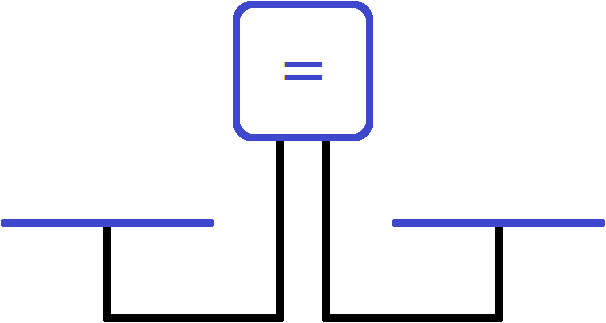
В данный момент экран показывает знак равенства. Понятно почему левая чаша равна правой чаше — на чашах ничего нет. Состояние весов и отсутствие на чашах чего-либо запишем с помощью следующего равенства:
\[0 = 0\]
Положим на левую чашу весов арбуз:
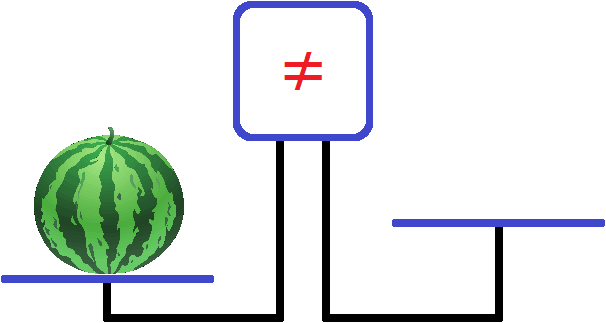
Левая чаша перевесила правую чашу и экран забил тревогу, показав знак не равно ( ≠ ). Этот знак говорит о том, что левая чаша не равна правой чаше.
Теперь попробуем решить задачу. Пусть требуется узнать сколько весит арбуз, который лежит на левой чаше. Но как это узнать? Ведь наши весы предназначены только для проверки равна ли левая чаша правой.
На помощь приходят уравнения. Вспомним, что уравнение по определению есть равенство, содержащее в себе переменную значение которой требуется найти. Весы в данном случае играют роль этого самого уравнения, а масса арбуза это переменная, значение которой нужно найти. Наша цель правильно составить это уравнение. Понимай, выровнять весы так, чтобы можно было вычислить массу арбуза.
Чтобы выровнять весы, на правую чашу можно положить какой-нибудь тяжелый предмет. Например, положим туда гирю массой 7 кг.
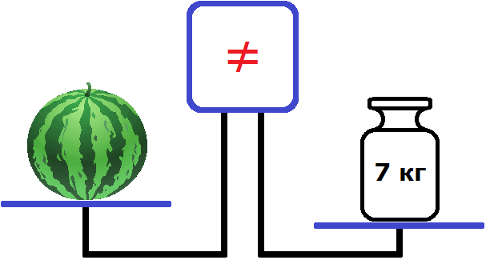
Теперь наоборот правая чаша перевесила левую. Экран по-прежнему показывает, что чаши не равны.
Попробуем на левую чашу положить гирю массой 4 кг
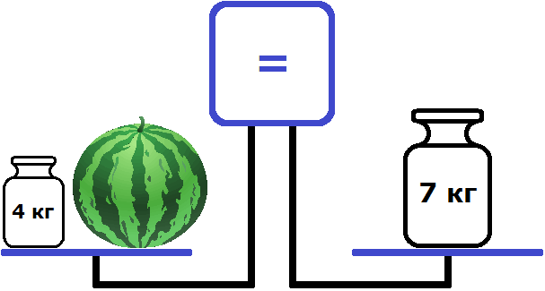
Теперь весы выровнялись. На рисунке видно, что левая чаша на уровне правой чаши. А экран показывает знак равенства. Этот знак говорит о том, что левая чаша равна правой чаше.
Таким образом мы получили уравнение — равенство, содержащее неизвестное. Левая чаша — это левая часть уравнения, состоящая из компонентов 4 и переменной x (массы арбуза), а правая чаша — это правая часть уравнения, состоящая из компонента 7.
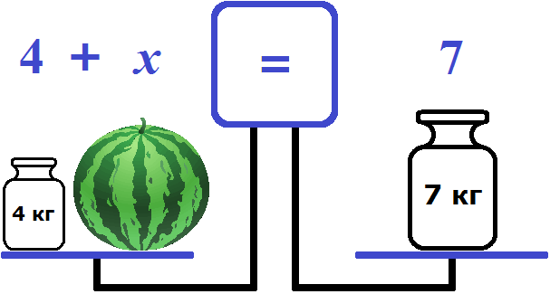
Ну и нетрудно догадаться, что корень уравнения 4 + x = 7 равен 3. Значит масса арбуза равна 3 кг.
Аналогично дела обстоят и с другими задачами. Чтобы найти какое-нибудь неизвестное значение, к левой или к правой части уравнения добавляют различные элементы: слагаемые, множители, выражения. В школьных задачах эти элементы бывают уже даны. Остается только правильно структурировать их и построить уравнение. Мы же в данном примере занимались подбором, пробуя гири разной массы, чтобы вычислить массу арбуза.
Естественно, те данные которые даны в задаче сначала нужно привести к виду, при котором их можно включить в уравнение. Поэтому, как говорят «хочешь не хочешь, а думать придётся».
Рассмотрим следующую задачу. Возраст отца равен возрасту сына и дочери вместе. Сын вдвое старше дочери и на двадцать лет моложе отца. Сколько лет каждому?
Возраст дочери можно обозначить через x. Если сын вдвое старше дочери, то его возраст будет обозначаться как 2x. В условии задачи сказано, что вместе возраст дочери и сына равен возрасту отца. Значит возраст отца будет обозначаться суммой x + 2x
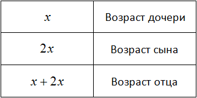
В выражении
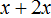
можно привести подобные слагаемые. Тогда возраст отца будет обозначаться как 3xТеперь составим уравнение. Нам нужно получить равенство в котором можно найти неизвестное x. Воспользуемся весами. На левую чашу положим возраст отца (3x), а на правую чашу возраст сына (2x)
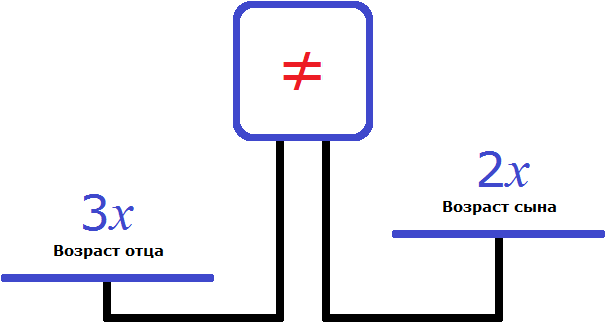
Понятно почему левая чаша перевесила правую и почему экран показывает знак ( ≠ ). Ведь логично, что возраст отца больше возраста сына.
Но нам нужно уравнять весы, чтобы можно было вычислить неизвестное x. Для этого к правой чаше нужно прибавить какое-нибудь число. Какое именно число указано в задаче. В условии было сказано, что сын моложе отца на 20 лет. Значит 20 лет это то самое число, которое нужно положить на весы.
Весы выровнятся, если мы эти 20 лет добавим на правую чашу весов. Иными словами, вырастим сына до возраста отца
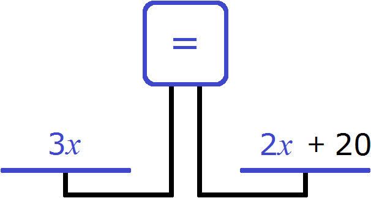
Теперь весы выровнялись. Получилось уравнение
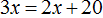
, которое решается легко: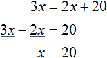
В начале решения данной задачи через переменную x мы обозначили возраст дочери. Теперь мы нашли значение этой переменной. Дочери 20 лет.
Далее было сказано, что сын вдвое старше дочери, значит сыну (20 × 2), то есть 40 лет.
Ну и наконец вычислим возраст отца. В задаче было сказано, что он равен сумме возрастов сына и дочери, то есть (20 + 40) лет.
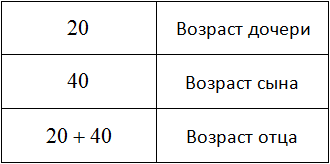
Вернемся к середине задачи и обратим внимание на один момент. Когда мы положили на весы возраст отца и возраст сына, левая чаша перевесила правую
Но мы решили эту проблему, добавив на правую чашу еще 20 лет. В результате весы выровнялись и мы получили равенство
Но можно было не добавлять к правой чаше эти 20 лет, а вычесть их из левой. Мы получили бы равенство и в таком случае
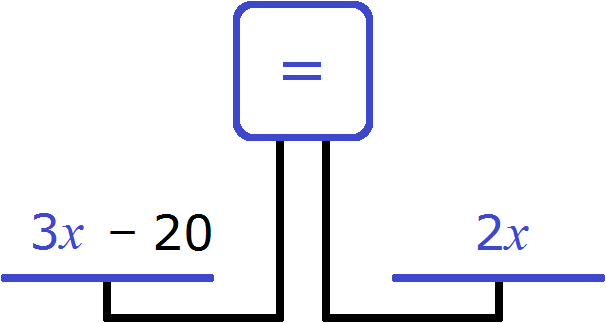
В этот раз получается уравнение
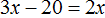
. Корень уравнения по-прежнему равен 20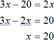
То есть уравнения и являются равносильными. А мы помним, что у равносильных уравнений корни совпадают. Если внимательно посмотреть на эти два уравнения, то можно увидеть что второе уравнение получено путем переноса числа 20 из правой части в левую с противоположным знаком. А это действие, как было указано в предыдущем уроке, не меняет корней уравнения.
Также нужно обратить внимание на то, что в начале решения задачи возрасты каждого члена семьи можно было обозначить через другие выражения.
Скажем возраст сына обозначить через x и поскольку он двое старше дочери, то возраст дочери обозначить через
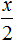
(понимай сделать её младше сына в два раза). А возраст отца, поскольку он является суммой возрастов сына и дочери обозначить через выражение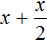
. Ну и напоследок для построения логически правильного уравнения, к возрасту сына нужно прибавить число 20, ведь отец старше на двадцать лет. В итоге получается совсем другое уравнение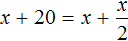
. Решим это уравнение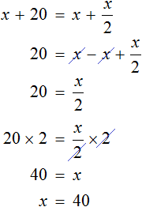
Как видно ответы к задаче не поменялись. Сыну по-прежнему 40 лет. Дочери по-прежнему
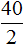
лет, а отцу 40 + 20 лет.Другими словами, задача может решаться различными методами. Поэтому не следует отчаиваться, что не получается решить ту или иную задачу. Но нужно иметь в виду, что существуют наиболее простые пути решения задачи. К центру города можно доехать различными маршрутами, но всегда существует наиболее удобный, быстрый и безопасный маршрут.
Примеры решения задач
Задача 1. В двух пачках всего 30 тетрадей. Если бы из первой пачки переложили во вторую 2 тетради, то в первой пачке стало бы вдвое больше тетрадей, чем во второй. Сколько тетрадей было в каждой пачке?
Решение
Обозначим через x количество тетрадей, которое было в первой пачке. Если всего тетрадей было 30, а переменная x это количество тетрадей из первой пачке, то количество тетрадей во второй пачке будет обозначаться через выражение 30 − x. То есть от общего количества тетрадей вычитаем количество тетрадей из первой пачки и тем самым получаем количество тетрадей из второй пачки.
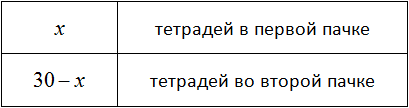
Далее сказано, что если переложить 2 тетради из первой пачки во вторую, то в первой пачке окажется вдвое больше тетрадей. Итак, снимем с первой пачки две тетради
и добавим эти две тетради во вторую пачку
Выражения из которых мы будем составлять уравнение теперь принимают следующий вид:
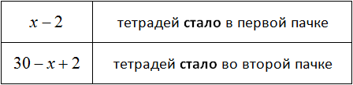
Попробуем составить уравнение из имеющихся выражений. Положим на весы обе пачки тетрадей
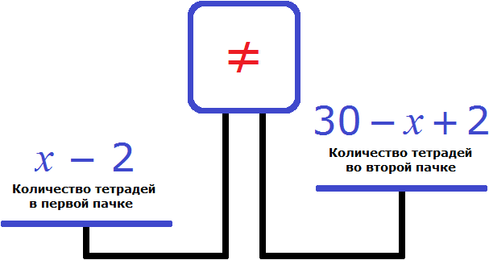
Левая чаша тяжелее правой. Это потому, что в условии задачи сказано, что после того как из первой пачки взяли две тетради и положили их во вторую, количество тетрадей в первой пачке стало вдвое больше, чем во второй.
Чтобы выровнять весы и получить уравнение, увеличим правую часть вдвое. Для этого умножим её на 2
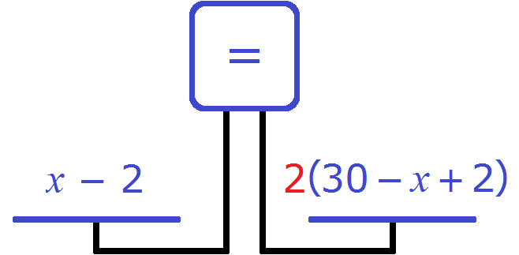
Получается уравнение
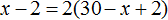
. Решим данное уравнение: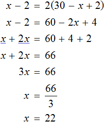
Первую пачку мы обозначали через переменную x. Теперь мы нашли её значение. Переменная x равна 22. Значит в первой пачке было 22 тетради.
А вторую пачку мы обозначали через выражение 30 − x и поскольку значение переменной x теперь известно, то можно вычислить количество тетрадей во второй пачке. Оно равно 30 − 22, то есть 8 шт.
Задача 2. Два человека чистили картофель. Один очищал в минуту две картофелины, а второй — три картофелины. Вместе они очистили 400 шт. Сколько времени работал каждый, если второй проработал на 25 минут больше первого?
Решение
Обозначим через x время работы первого человека. Поскольку второй человек проработал на 25 минут больше первого, то его время будет обозначаться через выражение
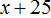
Первый рабочий в минуту очищал 2 картофелины, и поскольку он работал x минут, то всего он очистил 2x картофелин.
Второй человек в минуту очищал три картофелины, и поскольку он работал минут, то всего он очистил
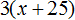
картофелин.Вместе они очистили 400 картофелин
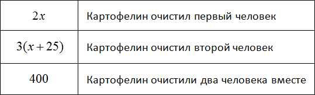
Из имеющихся компонентов составим и решим уравнение. В левой части уравнения будут картофелины, очищенные каждым человеком, а в правой части их сумма:
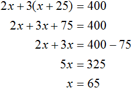
В начале решения данной задачи через переменную x мы обозначили время работы первого человека. Теперь мы нашли значение этой переменной. Первый человек работал 65 минут.
А второй человек работал минут, и поскольку значение переменной x теперь известно, то можно вычислить время работы второго человека — оно равно 65 + 25, то есть 90 мин.
Задача из Учебника по алгебре Андрея Петровича Киселева. Из сортов чая составлена смесь в 32 кг. Килограмм первого сорта стоит 8 руб., а второго сорта 6 руб. 50 коп. Сколько килограммов взято того и другого сорта, если килограмм смеси стоит (без прибыли и убытка) 7 руб. 10 коп.?
Решение
Обозначим через x массу чая первого сорта. Тогда масса чая второго сорта будет обозначаться через выражение 32 − x
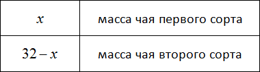
Килограмм чая первого сорта стоит 8 руб. Если эти восемь рублей умножить на количество килограмм чая первого сорта, то можно будет узнать во сколько рублей обошлись x кг чая первого сорта.
А килограмм чая второго сорта стоит 6 руб. 50 коп. Если эти 6 руб. 50 коп. умножить на 32 − x, то можно узнать во сколько рублей обошлись 32 − x кг чая второго сорта.
В условии сказано, что килограмм смеси стоит 7 руб. 10 коп. Всего же было приготовлено 32 кг смеси. Умножим 7 руб. 10 коп. на 32 мы сможем узнать сколько стоит 32 кг смеси.
Выражения из которых мы будем составлять уравнение теперь принимают следующий вид:
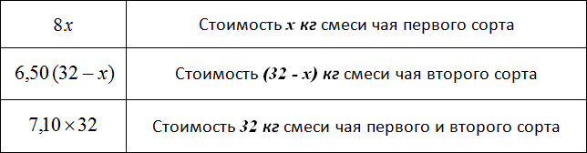
Попробуем составить уравнение из имеющихся выражений. Положим на левую чашу весов стоимость смесей чая первого и второго сорта, а на правую чашу положим стоимость 32 кг смеси, то есть общую стоимость смеси, в составе которой оба сорта чая:
Получили уравнение . Решим его:
В начале решения данной задачи через переменную x мы обозначили массу чая первого сорта. Теперь мы нашли значение этой переменной. Переменная x равна 12,8. Значит для приготовления смеси было взято 12,8 кг чая первого сорта.
А через выражение 32 − x мы обозначили массу чая второго сорта и поскольку значение переменной x теперь известно, то можно вычислить массу чая второго сорта. Оно равно 32 − 12,8 то есть 19,2. Значит для приготовления смеси было взято 19,2 кг чая второго сорта.
Задача 3. Велосипедист проехал некоторое расстояние со скоростью 8 км/ч. Возвратиться он должен был другой дорогой, которая была на 3 км длиннее первой, и, хотя возвращаясь, ехал со скоростью 9 км/ч, он употребил времени на  минут более. Как длинны были дороги?
минут более. Как длинны были дороги?
Решение
Некоторые задачи могут затрагивать темы, которые человек возможно не изучал. Данная задача относится к такому кругу задач. В ней затрагиваются понятия расстояния, скорости и времени. Соответственно, чтобы решить подобную задачу, нужно иметь представление о тех вещах, о которых говорится в задаче. В нашем случае, надо знать что представляет собой расстояние, скорость и время.
В задаче нужно найти расстояния двух дорог. Мы должны составить уравнение, которое позволит вычислить эти расстояния.
Вспомним, как взаимосвязаны расстояние, скорость и время. Каждая из этих величин может быть описана с помощью буквенного уравнения:
Правую часть одного из этих уравнений мы будем использовать для составления своего уравнения. Чтобы узнать какую именно, нужно вернуться к тексту задачи и обратить внимание на следующий момент:
Следует обратить внимание на момент, где велосипедист на обратном пути употребил времени на  минут более. Эта подсказка указывает нам, что можно воспользоваться уравнением , а именно его правой частью. Это позволит нам составить уравнение, которое содержит переменную S.
минут более. Эта подсказка указывает нам, что можно воспользоваться уравнением , а именно его правой частью. Это позволит нам составить уравнение, которое содержит переменную S.
Итак, обозначим длину первой дороги через S. Этот путь велосипедист проехал со скоростью 8 км/ч. Время за которое он преодолел этот путь будет обозначаться выражением , поскольку время это отношение пройденного расстояния к скорости
Обратная дорога для велосипедиста была длиннее на 3 км. Поэтому её расстояние будет обозначаться через выражение S + 3. Эту дорогу велосипедист проехал со скоростью 9 км/ч. А значит время за которое он преодолел этот путь будет обозначаться выражением .
Теперь составим уравнение из имеющихся выражений
Правая чаша тяжелее левой. Это потому, что в задаче сказано, что на обратную дорогу велосипедист затратил времени на  больше.
больше.
Чтобы уравнять весы прибавим к левой части эти самые  минут. Но сначала переведем минуты в часы, поскольку в задаче скорость измеряется в километрах в час, а не в метрах в минуту.
минут. Но сначала переведем минуты в часы, поскольку в задаче скорость измеряется в километрах в час, а не в метрах в минуту.
Чтобы  минут перевести в часы, нужно разделить их на 60
минут перевести в часы, нужно разделить их на 60
 минут составляют
минут составляют  часа. Прибавляем эти
часа. Прибавляем эти  часа к левой части уравнения:
часа к левой части уравнения:
Получается уравнение . Решим данное уравнение. Чтобы избавиться от дробей, обе части части можно умножить на 72. Далее пользуясь известными тождественными преобразованиями, найдем значение переменной S
Через переменную S мы обозначали расстояние первой дороги. Теперь мы нашли значение этой переменной. Переменная S равна 15. Значит расстояние первой дороги составляет 15 км.
А расстояние второй дороги мы обозначили через выражение S + 3, и поскольку значение переменной S теперь известно, то можно вычислить расстояние второй дороги. Это расстояние равно сумме 15 + 3, то есть 18 км.
Задача 4. По шоссе идут две машины с одной и той же скоростью. Если первая увеличит скорость на 10 км/ч, а вторая уменьшит скорость на 10 км/ч, то первая за 2 ч пройдет столько же, сколько вторая за 3 ч. С какой скоростью идут автомашины?
Решение
Обозначим через v скорость каждой машины. Далее в задаче приводятся подсказки: скорость первой машины увеличить на 10 км/ч, а скорость второй — уменьшить на 10 км/ч. Воспользуемся этой подсказкой
Далее говорится, что при таких скоростях (увеличенных и уменьшенных на 10 км/ч) первая машина пройдет за 2 часа столько же расстояния сколько вторая за 3 часа. Фразу «столько же» можно понимать как «расстояние, пройденное первой машиной, будет равно расстоянию, пройденному второй машиной».
Расстояние как мы помним, определяется по формуле . Нас интересует правая часть этого буквенного уравнения — она позволит нам составить уравнение, содержащее переменную v.
Итак, при скорости v + 10 км/ч первая машина пройдет 2(v+10) км, а вторая пройдет 3(v − 10) км. При таком условии машины пройдут одинаковые расстояния, поэтому для получения уравнения достаточно соединить эти два выражения знаком равенства. Тогда получим уравнение . Решим его:
В условии задачи было сказано, что машины идут с одинаковой скоростью. Мы обозначили эту скорость через переменную v. Теперь мы нашли значение этой переменной. Переменная v равна 50. Значит скорость обеих машин составляла 50 км/ч.
Задача 5. За 9 ч по течению реки теплоход проходит тот же путь, что за 11 ч против течения. Найдите собственную скорость теплохода, если скорость течения реки 2 км/ч.
Решение
Обозначим через v собственную скорость теплохода. Скорость течения реки равна 2 км/ч. По течению реки скорость теплохода будет составлять v + 2 км/ч, а против течения — (v − 2) км/ч.
В условии задачи сказано, что за 9 ч по течению реки теплоход проходит тот же путь, что за 11 ч против течения. Фразу «тот же путь» можно понимать как «расстояние, пройденное теплоходом по течению реки за 9 часов, равно расстоянию, пройденному теплоходом против течения реки за 11 часов». То есть расстояния будут одинаковыми.
Расстояние определяется по формуле . Воспользуемся правой частью этого буквенного уравнения для составления своего уравнения.
Итак, за 9 часов по течению реки теплоход пройдет 9(v + 2) км, а за 11 часов против течения — 11(v − 2) км. Поскольку оба выражения описывают одно и то же расстояние, приравняем первое выражение ко второму. В результате получим уравнение . Решим его:
Значит собственная скорость теплохода составляет 20 км/ч.
При решении задач полезной привычкой является заранее определить на каком множестве ищется для неё решение.
Допустим, что в задаче требовалось найти время, за которое пешеход преодолеет указанный путь. Мы обозначили время через переменную t, далее составили уравнение, содержащее эту переменную и нашли её значение.
Из практики мы знаем, что время движения объекта может принимать как целые значения, так и дробные, например 2 ч, 1,5 ч, 0,5 ч. Тогда можно сказать, что решение данной задачи ищется на множестве рациональных чисел Q, поскольку каждое из значений 2 ч, 1,5 ч, 0,5 ч может быть представлено в виде дроби.
Поэтому после того, как неизвестную величину обозначили через переменную, полезно указать к какому множеству эта величина принадлежит. В нашем примере время t принадлежит множеству рациональных чисел Q
t ∈ Q
Ещё можно ввести ограничение для переменной t, указав что она может принимать только положительные значения. Действительно, если объект затратил на путь определенное время, то это время не может быть отрицательным. Поэтому рядом с выражением t ∈ Q укажем, что её значение должно быть больше нуля:
t ∈ R, t > 0
Если решив уравнение, мы получим отрицательное значение для переменной t, то можно будет сделать вывод, что задача решена неправильно, поскольку это решение не будет удовлетворять условию t ∈ Q, t > 0.
Ещё пример. Если бы мы решали задачу в которой требовалось найти количество человек для выполнения той или иной работы, то это количество мы обозначили бы через переменную x. В такой задаче решение искалось бы на множестве натуральных чисел
x ∈ N
Действительно, количество человек является целым числом, например 2 человека, 3 человека, 5 человек. Но никак не 1,5 (один целый человек и половина человека) или 2,3 (два целых человека и еще три десятых человека).
Здесь можно было бы указать, что количество человек должно быть больше нуля, но числа входящие во множество натуральных чисел N сами по себе являются положительными и большими нуля. В этом множестве нет отрицательных чисел и числа 0. Поэтому выражение x > 0 можно не писать.
Задача 6. Для ремонта школы прибыла бригада в которой было в 2,5 раза больше маляров, чем плотников. Вскоре прораб включил в бригаду еще четырех маляров, а двух плотников перевел на другой объект. В результате маляров в бригаде оказалось в 4 раза больше чем плотников. Сколько маляров и сколько плотников было в бригаде первоначально
Решение
Обозначим через x плотников, прибывших на ремонт первоначально.
Количество плотников является целым числом, большим нуля. Поэтому укажем, что x принадлежит множество натуральных чисел
x ∈ N
Маляров было в 2,5 раза больше, чем плотников. Поэтому количество маляров будет обозначаться как 2,5x.
Далее говорится, что прораб включил в бригаду еще четырех маляров, а двух плотников перевел на другой объект. Сделаем для своих выражений тоже самое. Уменьшим количество плотников на 2
А количество маляров увеличим на 4
Теперь количество плотников и маляров будут обозначаться через следующие выражения:
Попробуем составить уравнение из имеющихся выражений:
Правая чаша больше, поскольку после включения в бригаду ещё четырёх маляров, и перемещения двух плотников на другой объект, количество маляров в бригаде оказалось в 4 раза больше чем плотников. Чтобы уравнять весы, нужно левую чашу увеличить в 4 раза:
Получили уравнение . Решим его:
Через переменную x было обозначено первоначальное количество плотников. Теперь мы нашли значение этой переменной. Переменная x равна 8. Значит 8 плотников было в бригаде первоначально.
А количество маляров было обозначено через выражение 2,5x и поскольку значение переменной x теперь известно, то можно вычислить количество маляров — оно равно 2,5 × 8, то есть 20.
Возвращаемся к началу задачи и удостоверяемся, что соблюдается условие x ∈ N. Переменная x равна 8, а элементы множества натуральных чисел N это все числа, начинающиеся с 1, 2, 3 и так далее до бесконечности. В это же множество входит число 8, которое мы нашли.
8 ∈ N
Тоже самое можно сказать о количестве маляров. Число 20 принадлежит множеству натуральных чисел:
20 ∈ N
Для понимания сути задачи и правильного составления уравнения, вовсе необязательно использовать модель весов с чашами. Можно использовать и другие модели: отрезки, таблицы, схемы. Можно придумать свою модель, которая хорошо описывала бы суть задачи.
Задача 9. Из бидона отлили 30% молока. В результате в нем осталось 14 л. Сколько литров молока было в бидоне первоначально?
Решение
Искомое значение это первоначальное число литров в бидоне. Изобразим число литров в виде линии и подпишем эту линию как X
Сказано, что из бидона отлили 30% молока. Выделим на рисунке приблизительно 30%
Процент по определению есть одна сотая часть чего-то. Если 30% молока отлили, то остальные 70% остались в бидоне. На эти 70% приходятся 14 литров, указанные в задаче. Выделим на рисунке оставшиеся 70%
Теперь можно составить уравнение. Вспомним, как находить процент от числа. Для этого общее количество чего-то делят на 100 и полученный результат умножают на искомое количество процентов. Замечаем, что 14 литров, составляющих 70% можно получить таким же образом: первоначальное число литров X разделить на 100 и полученный результат умножить на 70. Всё это приравнять к числу 14
Или получить более простое уравнение: 70% записать как 0,70, затем умножить на X и приравнять это выражение к 14
Значит первоначально в бидоне было 20 литров молока.
Задача 9. Взяли два сплава золота и серебра. В одном количество этих металлов находится в отношении 1 : 9, а в другом 2 : 3. Сколько нужно взять каждого сплава, чтобы получить 15 кг нового сплава, в котором золото и серебро относилось бы как 1 : 4?
Решение
Попробуем сначала узнать сколько золота и серебра будет содержáться в 15 кг нового сплава. В задаче сказано, что содержание этих металлов должно быть в отношении 1 : 4, то есть на одну часть сплава должно приходиться золото, а на четыре части — серебро. Тогда всего частей в сплаве будет 1 + 4 = 5, а масса одной части будет 15 : 5 = 3 кг.
Определим сколько золота будет содержáться в 15 кг сплава. Для этого 3 кг умножим на количество частей золота:
3 кг × 1 = 3 кг
Определим сколько серебра будет содержáться в 15 кг сплава:
3 кг × 4 = 12 кг
Значит сплав массой 15 кг будет содержать 3 кг золота и 12 кг серебра. Теперь вернёмся к исходным сплавам. Использовать нужно каждый из них. Обозначим через x массу первого сплава, а массу второго сплава можно обозначить через 15 − x
Выразим в процентах все отношения, которые даны в задаче и заполним ими следующую таблицу:
В первом сплаве золото и серебро находятся в отношении 1 : 9. Тогда всего частей будет 1 + 9 = 10. Из них золота будет , а серебра .
Перенесём эти данные в таблицу. 10% занесём в первую строку в графу «процент золота в сплаве», 90% также занесём в первую строку графу «процент серебра в сплаве», а в последнюю графу «масса сплава» занесём переменную x, поскольку так мы обозначили массу первого сплава:
Аналогично поступаем со вторым сплавом. Золото и серебро в нём находятся в отношении 2 : 3. Тогда всего частей будет 2 + 3 = 5. Из них золота будет , а серебра .
Перенесём эти данные в таблицу. 40% занесем во вторую строку в графу «процент золота в сплаве», 60% также занесём во вторую строку графу «процент серебра в сплаве», а в последнюю графу «масса сплава» занесём выражение 15 − x, поскольку так мы обозначили массу второго сплава:
Заполним последнюю строку. Полученный сплав массой 15 кг будет содержать 3 кг золота, что составляет сплава, а серебра будет сплава. В последнюю графу записываем массу полученного сплава 15
Теперь по данной таблице можно составить уравнения. Вспоминаем задачи на концентрацию, сплавы и смеси. Если мы отдельно сложим золото обоих сплавов и приравняем эту сумму к массе золота полученного сплава, то сможем узнать чему равно значение x.
Далее для удобства проценты будем выражать в десятичной дроби.
В первом сплаве золота было 0,10x, а во втором сплаве золота было 0,40(15 − x). Тогда в полученном сплаве масса золота будет суммой масс золота первого и второго сплавов и эта масса составляет 20% от нового сплава. А 20% от нового сплава это 3 кг золота, вычисленные нами ранее. В результате получаем уравнение 0,10x + 0.40(15 − x) = 3. Решим это уравнение:
Изначально через x мы обозначили массу первого сплава. Теперь мы нашли значение этой переменной. Переменная x равна 10. А массу второго сплава мы обозначили через 15 − x, и поскольку значение переменной x теперь известно, то можно вычислить массу второго сплава, она равна 15 − 10 = 5 кг.
Значит для получения нового сплава массой 15 кг в котором золото и серебро относились бы как 1 : 4, нужно взять 10 кг первого и 5 кг второго сплава.
Уравнение можно было составить, воспользовавшись и вторым столбцом получившейся таблицы. Тогда мы получили бы уравнение 0,90x + 0.60(15 − x) = 12. Корень этого уравнения тоже равен 10
Задача 10. Имеется руда из двух пластов с содержанием меди в 6% и 11%. Сколько надо взять бедной руды, чтобы получить при смешивании с богатой 20 тонн с содержанием меди 8%?
Решение
Обозначим через x массу бедной руды. Поскольку нужно получить 20 тонн руды, то богатой руды будет взято 20 − x. Поскольку содержание меди в бедной руде составляет 6%, то в x тоннах руды будет содержáться 0,06x тонн меди. В богатой руде содержание меди составляет 11%, а в 20 − x тоннах богатой руды будет содержáться 0,11(20 − x) тонн меди.
В получившихся 20 тоннах руды содержание меди должно составлять 8%. Значит в 20 тоннах руды меди будет содержáться 20 × 0,08 = 1,6 тонн.
Сложим выражения 0,06x и 0,11(20 − x) и приравняем эту сумму к 1,6. Получим уравнение 0,06x + 0,11(20 − x) = 1,6
Решим данное уравнение:
Значит для получения 20 тонн руды с содержанием меди 8%, нужно взять 12 тонн бедной руды. Богатой же будет взято 20 − 12 = 8 тонн.
Задача 11. Увеличив среднюю скорость с 250 до 300 м/мин спортсменка стала пробегать дистанцию на 1 мин быстрее. Какова длина дистанции?
Решение
Длину дистанции (или расстояние дистанции) можно описать следующим буквенным уравнением:
Воспользуемся правой частью этого уравнения для составления своего уравнения. Изначально спортсменка пробегала дистанцию со скоростью 250 метров в минуту. При такой скорости длина дистанции будет описываться выражением 250t
Затем спортсменка увеличила свою скорость до 300 метров в минуту. При такой скорости длина дистанции будет описываться выражением 300t
Заметим, что длина дистанции это величина постоянная. От того, что спортсменка увеличит скорость или уменьшит её, длина дистанции останется неизменной.
Это позволяет нам приравнять выражение 250t к выражению 300t, поскольку оба выражения описывают длину одной и той же дистанции
\[250t = 300t\]
Но в задаче сказано, что при скорости 300 метров в минуту спортсменка стала пробегать дистанцию на 1 минуту быстрее. Другими словами, при скорости 300 метров в минуту, время движения уменьшится на единицу. Поэтому в уравнении 250t = 300t в правой части время нужно уменьшить на единицу:
Получилось простейшее уравнение. Решим его:
При скорости 250 метров в минуту спортсменка пробегает дистанцию за 6 минут. Зная скорость и время, можно определить длину дистанции:
S = 250 × 6 = 1500 м
А при скорости 300 метров в минуту спортсменка пробегает дистанцию за t − 1, то есть за 5 минут. Как было сказано ранее длина дистанции не меняется:
S = 300 × 5 = 1500 м
Задача 12. Всадник догоняет пешехода, находящегося впереди него на 15 км. Через сколько часов всадник догонит пешехода, если каждый час первый проезжает по 10 км, а второй проходит только по 4 км?
Решение
Данная задача является задачей на движение. Её можно решить, определив скорость сближения и разделив изначальное расстояние между всадником и пешеходом на эту скорость.
Скорость сближения определяется вычитанием меньшей скорости из большей:
10 км/ч − 4 км/ч = 6 км/ч (скорость сближения)
С каждым часом расстояние в 15 километров будут сокращаться на 6 км. Чтобы узнать, когда оно сократится полностью (когда всадник догонит пешехода), нужно 15 разделить на 6
15 : 6 = 2,5 ч
2,5 ч это два целых часа и половина часа. А половина часа это 30 минут. Значит всадник догонит пешехода через 2 часа 30 минут.
Решим эту задачу с помощью уравнения.
Будем считать, что пешеход и всадник вышли в путь из одного и того же места. Пешеход вышел раньше всадника и успел преодолеть 15 км
После этого вслед за ним в путь вышел всадник со скоростью 10 км/ч. А скорость пешехода составляет только 4 км/ч. Это значит, что всадник через некоторое время догонит пешехода. Это время нам нужно найти.
Когда всадник догонит пешехода это будет означать, что они вместе прошли одинаковое расстояние. Расстояние, пройденное всадником и пешеходом описывается следующим уравнением:
Воспользуемся правой частью этого уравнения для составления своего уравнения.
Расстояние, пройденное всадником, будет описываться выражением 10t. Поскольку пешеход вышел в путь раньше всадника и успел преодолеть 15 км, то расстояние пройденное им будет описываться выражением 4t + 15.
На момент, когда всадник догонит пешехода, оба они пройдут одинаковое расстояние. Это позволяет нам приравнять расстояния, пройденные всадником и пешеходом:
Получилось простейшее уравнение. Решим его:
Задачи для самостоятельного решения
Показать решение
Решение
Скорости поездов в данной задаче измеряются в километрах в час. Поэтому 45 мин, указанные в задаче, переведем в часы. 45 мин это 0,75 ч
Обозначим время, за которое товарный поезд приезжает в город, через переменную t. Поскольку пассажирский поезд приезжает в этот город на 0,75 ч быстрее, то время его движения будет обозначаться через выражение t − 0,75
Пассажирский поезд преодолел 48(t − 0.75) км, а товарный 36t км. Поскольку речь идет об одном и том же расстоянии, приравняем первое выражение ко второму. В результате получим уравнение 48(t − 0.75) = 36t. Решим его:
Теперь вычислим расстояние между городами. Для этого скорость товарного поезда (36 км/ч) умножим на время его движения t. Значение переменной t теперь известно — оно равно трём часам
36 × 3 = 108 км
Для вычисления расстояния можно воспользоваться и скоростью пассажирского поезда. Но в этом случае значение переменной t необходимо уменьшить на 0,75 поскольку пассажирский поезд затратил времени на 0,75 ч меньше
48 × (3 − 0,75) = 144 − 36 = 108 км
Ответ: расстояние между городами равно 108 км.
Показать решение
Решение
Пусть t время через которое автомобили встретились. Тогда первый автомобиль на момент встречи проедет 65t км, а второй 60t км. Сложим эти расстояния и приравняем к 150. Получим уравнение 65t + 60t = 150
Значение переменной t равно 1,2. Значит автомобили встретились через 1,2 часа.
Ответ: автомобили встретились через 1,2 часа.
Показать решение
Решение
Пусть x рабочих было в первом цехе. Во втором цехе было в три раза больше, чем в первом, поэтому количество рабочих во втором цехе можно обозначить через выражение 3x. В третьем цехе было на 15 рабочих меньше, чем во втором. Поэтому количество рабочих в третьем цехе можно обозначить через выражение 3x − 15.
В задаче сказано, что всего рабочих было 685. Поэтому можно сложить выражения x, 3x, 3x − 15 и приравнять эту сумму к числу 685. В результате получим уравнение x + 3x + (3x − 15) = 685
Через переменную x было обозначено количество рабочих в первом цехе. Теперь мы нашли значение этой переменной, оно равно 100. Значит в первом цехе было 100 рабочих.
Во втором цехе было 3x рабочих, то есть 3 × 100 = 300. А в третьем цехе было 3x − 15, то есть 3 × 100 − 15 = 285
Ответ: в первом цехе было 100 рабочих, во втором — 300, в третьем — 285.
Показать решение
Решение
Пусть x моторов должна была отремонтировать первая мастерская. Тогда вторая мастерская должна была отремонтировать 18 − x моторов.
Поскольку первая мастерская выполнила свой план на 120%, это означает что она отремонтировала 1,2x моторов . А вторая мастерская выполнила свой план на 125%, значит она отремонтировала 1,25(18 − x) моторов.
В задаче сказано, что было отремонтировано 22 мотора. Поэтому можно сложить выражения 1,2x и 1,25(18 − x) , затем приравнять эту сумму к числу 22. В результате получим уравнение 1,2x + 1,25(18 − x) = 22
Через переменную x было обозначено количество моторов, которые должна была отремонтировать первая мастерская. Теперь мы нашли значение этой переменной, она равна 10. Значит первая мастерская должна была отремонтировать 10 моторов.
А через выражение 18 − x было обозначено количество моторов, которые должна была отремонтировать вторая мастерская. Значит вторая мастерская должна была отремонтировать 18 − 10 = 8 моторов.
Ответ: первая мастерская должна была отремонтировать 10 моторов, а вторая — 8 моторов.
Показать решение
Решение
Пусть x рублей стоил товар до повышения цены. Если цена увеличилась на 30% это означает, что она увеличилась на 0,30x рублей. После повышения цены товар начал стоить 91 руб. Сложим x с 0,30x и приравняем эту сумму к 91. В результате получим уравнение x + 0.30x = 91
Значит до повышения цены товар стоил 70 рублей.
Ответ: до повышения цены товар стоил 70 рублей.
Показать решение
Решение
Пусть x — исходное число. Увеличим его на 25%. Получим выражение x + 0,25x. Приведем подобные слагаемые, получим x + 0,25x = 1.25x.
Узнаем какую часть исходное число x составляет от нового числа 1,25x
Если новое число 1,25x считать за 100%, а исходное число x составляет от него 80%, то уменьшив новое число на 20% можно получить исходное число x
Ответ: чтобы получить исходное число, новое число нужно уменьшить на 20%.
Показать решение
Решение
Пусть x — первоначальное число. Увеличим его на 20%. Получим выражение x + 0,20x. Приравняем эту сумму к числу 144, получим уравнение x + 0,20x = 144
Ответ: первоначальное значение числа равно 120.
Показать решение
Решение
Пусть x — первоначальное число. Уменьшим его на 10%. Получим выражение x − 0,10x. Приравняем эту разность к числу 45, получим уравнение x − 0,10x = 45
Ответ: первоначальное значение числа равно 50.
Показать решение
Решение
Пусть x рублей — первоначальная цена альбома. Снизим эту цену на 15%, получим x − 0,15x. Снизим цену ещё на 15 руб., получим x − 0,15x − 15. После этих снижений альбом стал стоить 19 руб. Приравняем выражение x − 0,15x − 15 к числу 19, получим уравнение x − 0,15x − 15 = 19
Ответ: первоначальная цена альбома составляет 40 руб.
Показать решение
Решение
Если 80% массы теряется, то на оставшиеся 20% будут приходиться 4 т сена. Пусть x тонн травы требуется для получения 4 т сена. Если 4 т будут составлять 20% травы, то можно составить уравнение:
Ответ: для получения 4 т сена, нужно накосить 20 т травы.
Показать решение
Решение
Пусть x кг 20%-го раствора соли нужно добавить к 1 кг 10%-го раствора.
В 1 кг 10%-го раствора соли содержится 0,1 кг соли. А в x кг 20%-го раствора соли содержится 0,20x кг соли.
После добавления x кг 20%-го раствора в новом растворе будет содержáться 0,12(1 + x) кг соли. Сложим выражения 0,1 и 0,20x, затем приравняем эту сумму к выражению 0,12(1 + x). В результате получим уравнение 0,1 + 0,20x = 0,12(1 + x)
Ответ: чтобы получить 12%-й раствор соли, нужно к 1 кг 10%-го раствора добавить 0,25 кг 20%-го раствора.
Показать решение
Решение
Пусть x кг первого раствора нужно взять. Поскольку требуется приготовить 25 кг раствора, то массу второго раствора можно обозначить через выражение 25 − x.
В первом растворе будет содержáться 0,20x кг соли, а втором — 0,30(25 − x) кг соли. В полученном растворе содержание соли будет 25 × 0,252 = 6,3 кг. Сложим выражения 0,20x и 0,30(25 − x), затем приравняем эту сумму к 6,3. В результате получим уравнение
Значит первого раствора нужно взять 12 кг, а второго 25 − 12 = 13 кг.
Ответ: первого раствора нужно взять 12 кг, а второго 13 кг.
Возникло желание поддержать проект?
Используй кнопку ниже